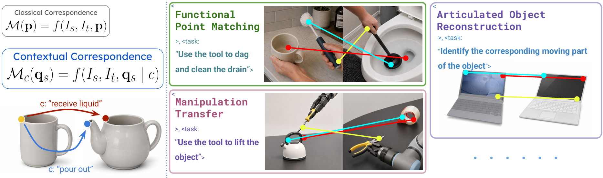
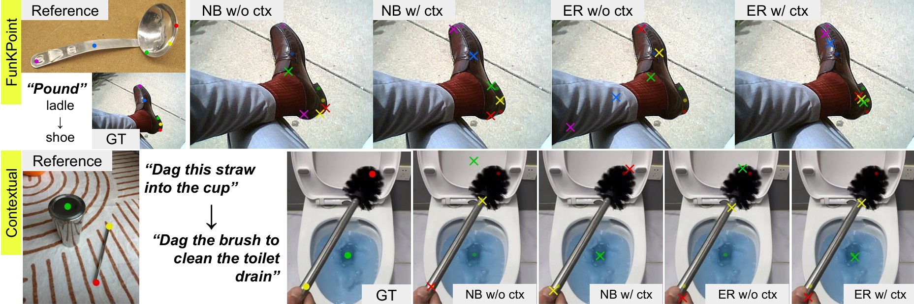
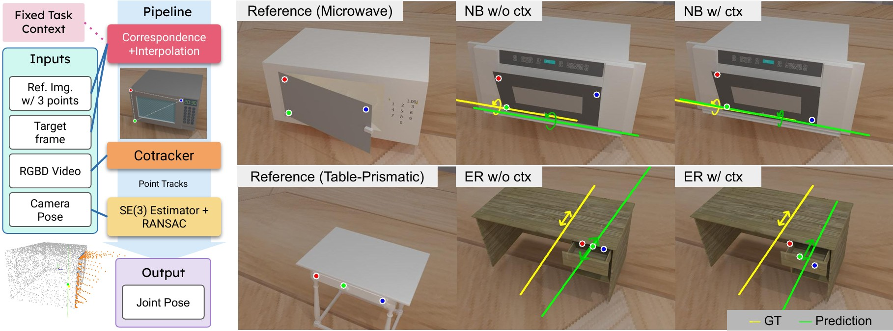
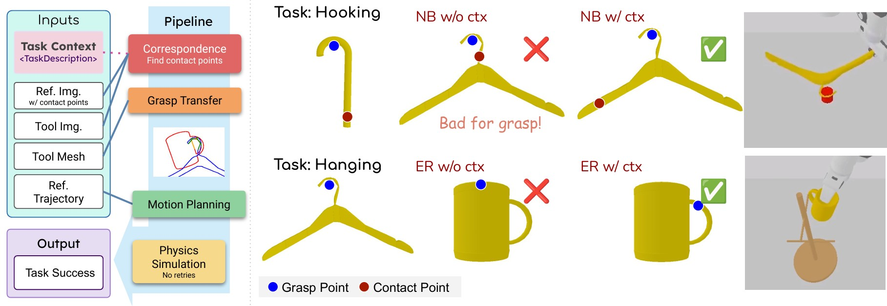
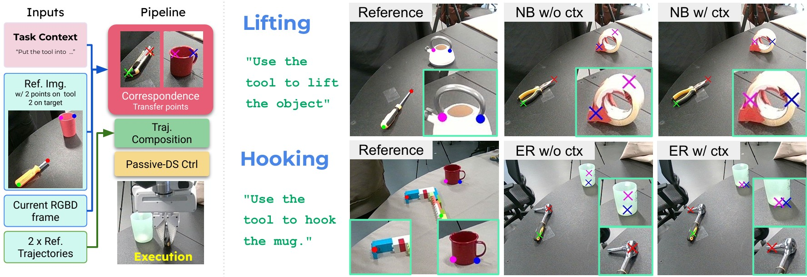

Under review. Please do not distribute.

Image correspondence is a fundamental problem in vision and a useful spatial interface for robotics, where correspondences can ground reconstruction, contact selection, and action transfer. It is often formulated as context-free, where correspondences are determined solely by “visual similarity,” which is inherently ambiguous. In embodied settings, the correct match depends on the intended use: the same rim point on a mug may correspond to a teapot’s spout when pouring liquid out, or to its top opening when receiving liquid.
In this paper, we introduce contextual correspondence, in which the correspondence-matching task is conditioned on contextual information, such as language or visual cues. Under this view, classical correspondence is a special case where the context is empty, while task-level functional correspondence is a special case where the context is a discrete label (e.g., “pouring from”). We instantiate this formulation using off-the-shelf promptable foundation models and propose an evaluation suite consisting of 2D functional keypoint matching, 3D articulated object reconstruction, and manipulation trajectory transfer in both simulation and on a real robot arm.
Without additional training, explicit context conditioning consistently improves correspondence accuracy and downstream task success, with the largest gains occurring in settings where visual similarity alone is ambiguous. We also show that even strong foundation models remain unreliable in many cases, leaving contextual correspondence as an open problem for embodied perception and action.
We instantiate contextual correspondence with off-the-shelf promptable foundation models — Nano-Banana 2 and Gemini-ER 1.6 — and test it across four applications. The core comparison is always the same model and pipeline, with versus without the task context, against context-free feature baselines (DINOv2, DINOv3, DiFT, TLFR, CLIP). Across all four, adding context consistently helps, with the largest gains exactly where visual similarity alone is ambiguous. In every table, blue marks the best result in a column.
Prompt-based models already have strong generic priors, but explicit context still improves matching accuracy (PCK at three thresholds). The gains are largest on Contextual FunKPoint, where the intended interaction determines the correct match.

| Method | FunKPoint Random | FunKPoint Selected | Contextual FunKPoint | ||||||
|---|---|---|---|---|---|---|---|---|---|
| @0.05 | @0.10 | @0.15 | @0.05 | @0.10 | @0.15 | @0.05 | @0.10 | @0.15 | |
| Nano-Banana 2 | 0.317 | 0.484 | 0.586 | 0.290 | 0.438 | 0.548 | 0.460 | 0.624 | 0.699 |
| w/o context | 0.290 | 0.429 | 0.541 | 0.217 | 0.339 | 0.439 | 0.259 | 0.419 | 0.511 |
| Gemini-ER 1.6 | 0.261 | 0.480 | 0.624 | 0.248 | 0.462 | 0.579 | 0.436 | 0.622 | 0.685 |
| w/o context | 0.258 | 0.451 | 0.584 | 0.213 | 0.377 | 0.487 | 0.354 | 0.483 | 0.564 |
| DINOv2 | 0.146 | 0.324 | 0.423 | 0.118 | 0.254 | 0.371 | 0.239 | 0.436 | 0.503 |
| DINOv3 | 0.123 | 0.275 | 0.404 | 0.114 | 0.241 | 0.337 | 0.264 | 0.460 | 0.515 |
| DiFT | 0.135 | 0.259 | 0.350 | 0.105 | 0.201 | 0.309 | 0.307 | 0.411 | 0.521 |
| TLFR | 0.133 | 0.246 | 0.330 | 0.113 | 0.218 | 0.287 | 0.209 | 0.319 | 0.387 |
| CLIP | 0.054 | 0.070 | 0.140 | 0.044 | 0.115 | 0.185 | 0.074 | 0.160 | 0.227 |
PCK on FunKPoint and Contextual FunKPoint (higher is better).
Predicted correspondences feed an RGB-only articulation-estimation pipeline. Context helps the model place keypoints on the moving part rather than a visually similar static region, avoiding degenerate axis estimates. The pipeline is also lightweight — under 15 s per instance versus 8+ min for the point-cloud-based iTACO reference — which it approaches in several categories.

| Method | Dishwasher | Laptop | Microwave | Table (P.) | Washing Mach. | ||||
|---|---|---|---|---|---|---|---|---|---|
| ori° | pos | ori° | pos | ori° | pos | ori° | ori° | pos | |
| Nano-Banana 2 | 27.33 | 0.273 | 7.66 | 0.058 | 6.55 | 0.039 | 8.61 | 40.24 | 0.166 |
| w/o context | 33.60 | 0.362 | 9.92 | 0.057 | 6.90 | 0.042 | 11.20 | 43.90 | 0.216 |
| Gemini-ER 1.6 | 20.89 | 0.363 | 10.03 | 0.084 | 4.23 | 0.040 | 15.20 | 49.54 | 0.369 |
| w/o context | 21.75 | 0.389 | 10.45 | 0.113 | 5.49 | 0.042 | 15.96 | 49.04 | 0.268 |
| DINOv3 | 23.64 | 0.281 | 23.64 | 0.090 | 7.89 | 0.026 | 10.08 | 57.72 | 0.300 |
| DINOv2 | 24.80* | 0.470* | 13.70 | 0.189 | 21.30 | 0.090 | 10.48* | 58.70 | 0.210 |
| TLFR | 29.67 | 0.304 | 11.18 | 0.206 | 28.68 | 0.156 | 23.77 | 52.78* | 0.210* |
| iTACO† | 14.07 | 0.130 | 21.25 | 0.090 | 7.27 | 0.100 | 20.25 | 7.53 | 0.040 |
Per-category articulation estimation (lower is better); orientation in degrees, position in meters. iTACO† uses point-cloud reconstruction and is excluded from ranking; * marks degenerate runs.
We transfer a demonstrated contact configuration to novel objects on Scooping, Hanging, and Hooking, building on MAGIC and swapping only the correspondence module. Context substantially raises success rates; most strikingly, on Hooking the context-free prompt-based variants fail completely.

| Method | Scooping | Hanging | Hooking |
|---|---|---|---|
| Gemini-ER 1.6 | 0.333 | 0.727 | 0.200 |
| w/o context | 0.167 | 0.364 | 0.000 |
| Nano-Banana 2 | 0.667 | 0.697 | 0.550 |
| w/o context | 0.500 | 0.273 | 0.000 |
| DINO w/o rot. | 0.500 | 0.000 | 0.100 |
| DINO w/ rot.† | 0.667 | 0.636 | 0.400 |
Success rate on MAGIC simulation manipulation (higher is better).
On a real arm (Dropping, Lifting, Hooking), explicit context improves every task. Lifting rises from 0.200 to 0.567 and Hooking from 0.433 to 0.733 for Gemini-ER. The reference image is essential: removing it (ER w/o ref.) drops Lifting to 0.067. Even so, the best success rates stay well below saturation — contextual correspondence remains an open problem in physical deployment.

| Method | Dropping | Lifting | Hooking |
|---|---|---|---|
| Gemini-ER 1.6 | 0.767 | 0.567 | 0.733 |
| w/o context | 0.567 | 0.200 | 0.433 |
| Nano-Banana 2 | 0.533 | 0.400 | 0.500 |
| w/o context | 0.267 | 0.067 | 0.233 |
| DINOv3 | 0.100 | 0.000 | 0.067 |
| DINOv2 | 0.233 | 0.133 | 0.033 |
| DiFT | 0.400 | 0.200 | 0.367 |
| ER w/o ref. | 0.367 | 0.067 | 0.400 |
Real-world manipulation success rate, averaged over 3 rounds of 10 trials (higher is better).
We formulate contextual correspondence as a context-conditioned mapping between image-level queries, recovering classical and discrete-label functional correspondence as special cases. Across four embodied reasoning and manipulation settings, prompting off-the-shelf foundation models with explicit context substantially improves correspondence and downstream success over context-free baselines. Yet even strong foundation models remain unreliable, leaving contextual correspondence an open problem for embodied perception and action.